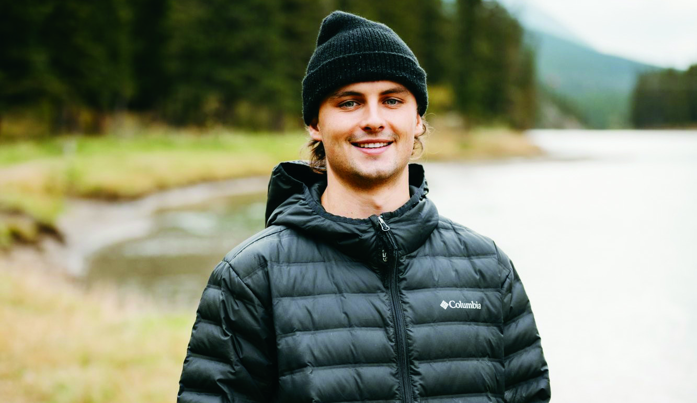

Rapport annuel 2023-24
Comment sonde-t-on l’infinie complexité du Cerveau ? En étant Infiniment Déterminé.
D’INNOMBRABLES VOIES,UN CHEMIN BIEN TRACÉ.
Cette année, notre rapport annuel explore notre détermination à expliquer les rouages du cerveau. Nos activités sont à la mesure de ses innombrables voies – complexes, interconnectées et vitales. Grâce à des programmes de recherche avant-gardistes et à des partenariats stratégiques, notre équipe a marqué des jalons importants dans la quête pour décrypter le cerveau et améliorer le sort des gens aux prises avec une maladie neurologique. Les 39,2 millions de dollars consacrés à la recherche cette année témoignent de notre mission visant à financer en grand la recherche audacieuse, pour mieux l’accélérer et l’amplifier.
Depuis plus de 25 ans, la Fondation Brain Canada mène la charge dans la compréhension du cerveau, qu’il soit en santé ou malade. L’historique suivant illustre notre cheminement.
INNOMBRABLES RETOMBÉES
Une année de jalons décisifs
1er avril 2023 au 31 mars 2024
- 22 comités d’évaluation par des pairs
- 110 subventions accordées
-
66 602
citations* de publications financées par la Fondation Brain Canada
*Cumulatif depuis 2011 - 34 chercheurs autochtones et noirs épaulés dans le cadre de programmes conjoints ciblés
- 10 nouveaux programmes lancés
- 86 cliniciens et chercheurs ayant siégé à un comité d’évaluation par des pairs de la Fondation Brain Canada
- 54 établissements financés
- 25 concours lancés
-
16
études cliniques en cours financées par la Fondation Brain Canada et ses partenaires
(selon la base de données ClinicalTrials.gov) -
183
chercheurs
financés -
382
publications révisées par des
pairs grâce à la Fondation
Brain Canada -
2 438
personnes ayant accès aux
essais cliniques financés
par la Fondation Brain Canada
(selon la base de données ClinicalTrials.gov) -
383
étudiants, stagiaires et
travailleurs hautement
qualifiés embauchés - 39,2 M$ investis dans la recherche
De la fierté à revendre
Nos dirigeants expriment leur infinie reconnaissance
Présidente du conseil d’administration
Un investissement qui donne des ailes
C’est avec fierté que je vous présente cette année un rapport annuel soulignant le pouvoir transformateur des investissements du gouvernement du Canada dans la recherche sur le cerveau, grâce au Fonds canadien de recherche sur le cerveau (FCRC). La Fondation Brain Canada s’emploie à faire progresser la neuroscience et la neurotechnologie, en levant le voile sur la complexité du cerveau humain et en améliorant le sort de gens partout au pays et de par le monde.
« Nos investissements sont à l’origine de découvertes qui transformeront les soins de santé et amélioreront la qualité de vie de tous. »
Cette année, nous avons consacré 39,2 millions de dollars à la recherche, subventionné 187 chercheurs et lancé 25 concours. Notre rayonnement est tout à fait extraordinaire, comme l’illustre la section Innombrables retombées aux pages 4 et 5.
Ce point dans notre cheminement mérite une réflexion sur la manière dont notre soutien indéfectible a profondément changé la donne. Grâce à la nouvelle enveloppe de 80 millions de dollars accordée par le gouvernement du Canada dans son Budget 2024 et à nos fonds de contrepartie qui porteront ce montant à 160 millions de dollars, la Fondation Brain Canada continuera d’être un moteur de recherches avant-gardistes et de collaborations entre chercheurs, cliniciens et établissements. Qu’il s’agisse de comprendre des troubles neurologiques ou d’élaborer des traitements novateurs, nos investissements sont à l’origine dedécouvertes qui transformeront les soins de santéet amélioreront la qualité de vie de tous. Nos efforts collectifs sont d’une valeur inestimable. En faisant une priorité de la recherche sur le cerveau, nous jetons un nouvel éclairage sur les fonctions et dysfonctions cérébrales, tout en procurant des connaissances et de l’espoir au plus grand nombre. Nos programmes phares et nos investissements stratégiques ont ouvert la voie à des projets innovants qui poussent la science vers de nouveaux sommets et aboutissent à des solutions tangibles.
Ensemble, nous jetons les bases d’un avenir où la santé cérébrale est une priorité commune à tous les secteurs de la société.
Cordialement,
Naomi Azrieli, OC, DPhil
PDG de la Fondation Brain Canada
Établir des liens scientifiques et entre nous
À titre de PDG de la Fondation Brain Canada, je sais qu’une bonne part de notre influence sur la santé cérébrale des gens repose sur la force de nos partenariats. Grâce à un travail concerté, nous pouvons surmonter les obstacles, favoriser l’innovation et offrir un apport inestimable à la population canadienne.
À titre d’agent fédérateur, la Fondation Brain Canada s’emploie à démontrer que le cerveau doit être abordé comme un système en soi, à la croisée des troubles neurologiques, des maladies mentales ainsi que des lésions cérébrales et médullaires. Ce faisant, nous réunissons plus de 100 partenaires formés, entre autres, d’organismes de santé bénévoles, d’établissements de recherche ainsi que de donateurs privés et corporatifs. Cette vision d’ensemble du cerveau favorise la collaboration, le partage des connaissances, ainsi que des équipes diversifiées et pluridisciplinaires qui travaillent ensemble pour faire progresser la recherche et en faire rayonner le potentiel.
Il est bien établi que l’on favorise l’excellence, l’innovation et la créativité en recherche lorsqu’on accroît l’équité, la diversité et l’inclusion. Nous sommes le seul organisme subventionnaire canadien voué exclusivement au cerveau et, à ce titre, nous saisissons l’occasion de faire progresser la dimension du sexe et du genre dans la recherche sur le cerveau. En effet, notre nouveau Plan d’action incorpore les notions de sexe, de genre, d’équité, de diversité et d’inclusion dans toutes nos activités, c’est-à-dire, notre mode de fonctionnement et de financement, les personnes que nous finançons et ce que nous finançons.
« Il est bien établi que l’on favorise l’excellence, l’innovation et la créativité en recherche lorsqu’on accroît l’équité, la diversité et l’inclusion.»
Grâce aux nouveaux fonds provenant du Budget 2024 du gouvernement fédéral, nous multiplierons les nouveaux partenariats, favoriserons les innovations collaboratives et accélérerons les percées scientifiques dans la recherche sur le cerveau.
Cordialement,
Viviane Poupon, PhD
Hors Normes
Des collectes de fonds étonnantes au bénéfice de tous
Des programmes porteurs
Qu’il s’agisse d’étudiants aux études supérieures ou de chercheurs en début de carrière, la Fondation Brain Canada se fait un devoir de renforcer les capacités de recherche afin d’améliorer le sort des personnes aux prises avec un trouble neurologique.
Nous attirons, retenons et diversifions une relève de calibre mondiale dans le domaine de la recherche sur le cerveau au Canada en créant des programmes stratégiques comme les bourses pour stagiaires Étoiles montantes, les subventions Futurs leaders canadiens de la recherche sur le cerveau et les subventions Momentum.
Grâce à un don initial de la Fondation Azrieli, le programme Futurs leaders a gagné le soutien de plusieurs donateurs importants qui croient dans l’importance de percer les mystères du cerveau pour améliorer la qualité de vie de la population canadienne.
Le pouvoir de la philanthropie
Faits saillants des bourses Futurs leaders
199 étudiants, stagiaires et PEQ*
98 collaborations
243 personnes œuvrant en recherche
51 publications révisées par des pairs
200 affiches et présentations orales
27 prix et reconnaissances
11 consultations avec des décideurs, patients et autres chercheurs
5 brevets
*PEQ – Personnel hautement qualifié
L’inspiration en mouvement
Après avoir subi une lésion cérébrale, Oscar Blyth a dû mettre ses études en veilleuse, tout comme son amour du ski acrobatique. Il est demeuré résilient et plein d’espoir malgré ces épreuves. Oscar a suivi plusieurs traitements, mais ses progrès n’ont pas toujours été linéaires ; il a dû reprendre le cours de sa vie en composant avec d’énormes souffrances.
Grâce à son attitude positive et à sa détermination, il a résolument emprunté le chemin de la réadaptation. Ce faisant, il s’est mis à la course à pied, au point de participer à un marathon lors duquel il a recueilli plus de 3 500 $ au profit de la Fondation Brain Canada.
Une étoile montante qui donne au suivant
En 2020, Olivier Goy, un entrepreneur, activiste et amateur de photographie français, a reçu un diagnostic de sclérose latérale amyotrophique (SLA), une maladie neurodégénérative rare. Ce père de deux enfants a fait mauvaise fortune bon cœur en faisant connaître son combat contre la SLA, une maladie qui afflige environ 3 000 Canadiens.
« C’est un privilège pour nous de fournir un don initial en l’honneur de notre ami. Sa passion, son esprit positif, son dynamisme et sa détermination, tout comme son engagement ferme et désintéressé envers la sensibilisation à la SLA afin d’aider ses semblables aux prises avec la maladie nous ont inspirés à lui emboiter le pas. »
Allan Kliger et Aviva Rajsky
Donateurs de la bourse pour stagiaire Étoile montante de la recherche sur la SLA, généreusement créée par Allan Kliger, Aviva Rajsky et famille

Promouvoir l’équité et l’inclusion
Nous sommes fiers d’annoncer la mise en œuvre continue de notre Plan d’action en matière d’analyse comparative entre les sexes et les genres + (ACSG+) et d’EDI, ainsi que la création d’un comité transversal d’ACSG+ et d’EDI. Ce Plan d’action améliore stratégiquement les opérations et activités de financement de la Fondation Brain Canada visant à promouvoir la santé cérébrale de tous.
« Ce financement sert de catalyseur dans nos laboratoires afin de comprendre les biomarqueurs moléculaires de la dépression post-partum, l’une des périodes où le risque de première dépression est le plus élevé. Je félicite la Fondation Brain Canada et ses partenaires financiers de donner la priorité aux découvertes dans le domaine de la santé mentale des femmes. »
Dr. Liisa Galea
Lauréate d’une subvention d’équipe Les bases
d’une meilleure santé mentale
Nos progrès
Esprit Philanthropique
Grands donateurs vecteurs de progrès
Notre éternelle gratitude
Nous tenons à remercier chaudement les généreux donateurs qui contribuent à faire des percées scientifiques. Chaque collaboration se veut un exemple éloquent de la différence que l’on peut faire dans l’avenir de la santé cérébrale, au Canada et partout ailleurs.
Consultez la liste complète des donateurs
Grands donateurs (dons cumulatifs de 2011 au 31 mars 2024)
- Fondation familiale Arrell
- Fondation Azrieli
- Bell Canada / Bell Cause pour la cause
- La famille Chagnon
- CIBC
- Erika Legacy Foundation
- Succession de Donna Canary
- Succession de John Borrowman
- La Famille Galati/Brain Changes Initiative
- Krembil Foundation
- Power Corporation du Canada
- Fondation Rossy
- Banque Royale du Canada / Fondation RBC
- Fondation familiale Alvin Segal
- Fondation familiale Larry et Judy Tanenbaum
- Fondation W. Garfield Weston
- Women’s Brain Health Initiative / Défi une tête d’avance
« Appuyer la Fondation Brain Canada, c’est vouloir repousser les limites de la recherche sur le cerveau. En tissant des collaborations internationales, la Fondation Brain Canada mobilise l’expertise collective des meilleurs scientifiques au monde, tout en faisant rayonner le partage des connaissances grâce à la science ouverte. Je suis fier de paver la voie à des solutions novatrices et accessibles en matière de santé cérébrale. »
Larry Tanenbaum O.C.
La Fondation Larry et Judy Tanenbaum est un donateur visionnaire de la subvention d’équipe de la Fondation Brain Canada et de l’Institut Weizmann, un partenariat phare qui vise à tirer parti de leurs forces respectives et à favoriser la coopération internationale entre les chercheurs du Canada et l’Institut Weizmann des sciences en Israël.
Regard surnos Finances
Les chiffres concrets à la base d’inestimables réalisations
Les états financiers de la Fondation Brain Canada sont vérifiés par Ernst & Young et sont disponibles ici.
Répartition financière
- 93 % Programmes de recherche
- 4 % Collectes de fonds
- 3 % Administration
Subventions et bourses versées
- 62 % Subventions de plateformes 24 277 482 $
- 22 % Subventions d’équipe 8 693 191 $
- 16 %Subventions de développement des compétences 6 211 280 $
- Total 39 181 953 $